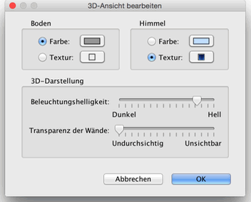

| Ändern der 3D-Ansicht | |||
Wählen Sie 3D Ansicht > Luftansicht oder 3D Ansicht > Virtuelles Begehen um zwischen den zwei möglichen 3D-Ansichten zu wechseln.
Wenn Luftansicht ausgewählt ist, zeigt die 3D-Ansicht ihre Wohnung in 3 Dimensionen
von einem erhöhtem Standpunkt aus. In diesem Modus wird die Kamera gedreht indem Sie die Maus
nach links oder rechts bewegen und dabei die linke Taste gedrückt halten. Indem Sie die Maus
bei gedrückter linker Maustaste nach vorn oder nach hinten bewegen, kippen Sie die 3D-Ansicht.
Das Mausrad zoomt Sie Ansicht herein oder heraus. Wenn Virtuelles Begehen ausgewählt ist, wird im Plan ein virtueller Besucher eingezeichnet. Dessen Lokation und Blickwinkel werden simultan erneuert mit denen der 3D-Ansicht. Dieser virtuelle Besucher ist von drei Indikatoren umgeben, die seine Blickrichtung anzeigen.
|


|
Wenn der Mauszeiger über einer der Schultern des virtuellen Besuchers ist, verändert er
seine Form um zu zeigen, dass Sie per Drag&Drop die Blickwinkel des Besuchers verändern können.
Während Sie die Maustaste gedrückt halten, zeigt ein Tooltip die veränderten Winkel an. Andere Attribute der 3D-Sicht verändern Sie über 3D Ansicht > Einstellungen....  In diesen Einstellungen können Sie das Blickfeld des Besuchers verändern, dessen Größe,
die Farben des Bodens und der Decken, die Bodentexturen, die Lichthelligkeit und die
Transparenz der Wände. |
|